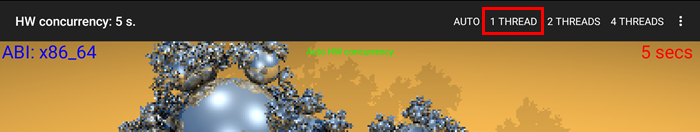
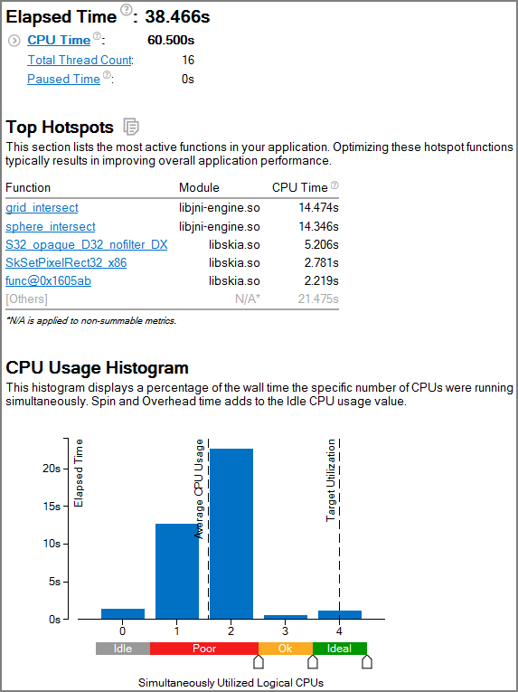
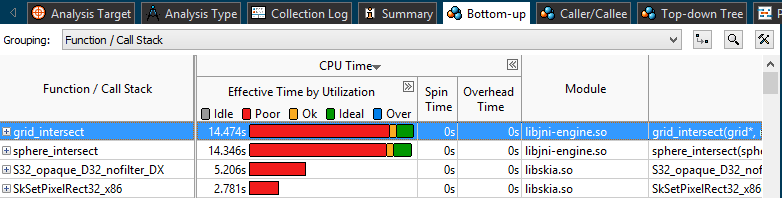
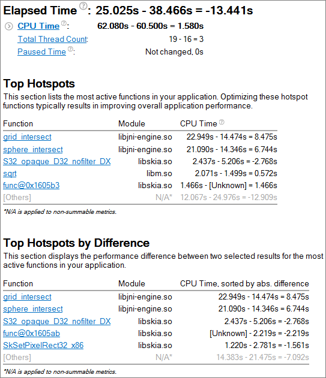

Intel® VTune™ Amplifier provides a comparison mechanism that helps identify
performance improvements or degradation on subsequent analysis runs. Typically
you would make a change to optimize the code and run a second analysis to
determine the degree to which the optimization improved application
performance. Rather than optimizing the
tachyon sample code, you can run a second Basic Hotspots
Analysis on the
tachyon package running on a single thread to reveal a
different analysis result.
Intel® VTune™ Amplifier provides a comparison mechanism that helps identify
performance improvements or degradation on subsequent analysis runs. Typically
you would make a change to optimize the code and run a second analysis to
determine the degree to which the optimization improved application
performance. Rather than optimizing the
tachyon sample code, you can run a second Basic Hotspots
Analysis on the
tachyon package running on a single thread to reveal a
different analysis result.
Run Basic Hotspots Analysis
Run the Basic Hotspots analysis again on the same Android* device.
Note
Consider removing the option to automatically stop collection after a certain interval and stopping the collection manually to allow the application to render the image fully. To do this, switch to the Analysis Target tab and uncheck the Automatically stop collection after (sec) option.
When the application launches, tap the top of the device screen and select 1 THREAD to run the application on a single thread.

Review the Results
In the single-thread version of the application, the hotspots remain the same, but the CPU Usage Histogram shows that the sample application ran on one or two logical CPUs rather than three or four when run on multiple threads.

Exploring the
Bottom-up tab shows that the
grid_intersect and
sphere_intersect functions spent the most time with
Poor CPU utilization (red
 bars).
bars).

Compare to Previous Result
Compare the new result run on a single thread with the original result run on multiple threads.
Close the analysis result tabs if they are open.
Click the Compare Results button
 on the toolbar.
on the toolbar.
Specify the results you want to compare.

Click Compare.
A Summary window opens that provides the statistics for the differences between the collected results.
Examine the data on the Summary window to see the differences in hotspot and CPU usage between runs. The list of Top Hotspots shows the differences in CPU time for the top functions for each result. The first number is for the first run using the automatic number of threads. The second number is for the second collection using a single thread. The Top Hotspots by Difference list shows the hotspots that had the greatest performance difference between runs.

In this example, the first analysis result was collected when the application was using multiple threads and the preset 25 second elapsed time allowed the application to fully render the image twice. Allowing the image to render twice resulted in a higher CPU time for the functions. In the second analysis result the image only rendered once even though the analysis result had a longer elapsed time. When analyzing your own application, you would typically begin by making code changes to improve the most CPU-intensive functions and therefore would hope that the difference between results would show performance improvement.
In this example, the CPU Usage Histogram shows that the initial analysis (darker blue) spent the most time running with three or four logical CPUs and the second analysis that was run on a single thread (lighter blue) spent the most time running on two logical CPUs. Switch to the Bottom-up window to view details about the CPU usage of each function.

When making changes to your own application, opening a comparison of two results can help identify areas that had performance differences. Evaluate whether your change impacted the highest hotspot and ensure that it did not cause a performance degradation elsewhere in the application. From there, you can begin to reduce other hotspots until your application is fully optimized.